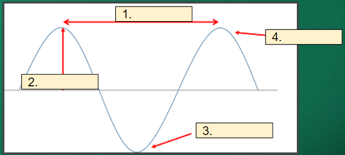
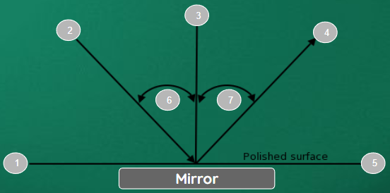

Properties of Wave and Light
Properties of Waves
A wave is a moving disturbance that transports energy from one place to another but does not necessarily transport matter.
The simplest wave is a periodic wave.
A periodic wave is a wave that repeats itself at regular intervals.

A wavefront is the continuous line or surface at the start of a wave as it travels in time.

The crest is the upper part of a wave.
The trough is the lower part of a wave.

Wavelength is the distance between one positive amplitude and the next.

Phase is the offset of the wave from a reference point.

Practice
Can you label the graph?

Reflection
Reflection is a change in the direction of a light ray when it meets an obstacle where the incoming ray and the outgoing ray are on the same side of the obstacle.

Normal is the line drawn at a right angle to the boundary at the point where an incident ray strikes the boundary.
The angle of incidence is the angle between the incident ray and the normal.
The angle of reflection is the angle between the reflected ray and the normal.
Law of Reflection
“For reflection from a flat surface, the angle of incidence is always equal to the angle of reflection.”

Practice
Label the figure.
